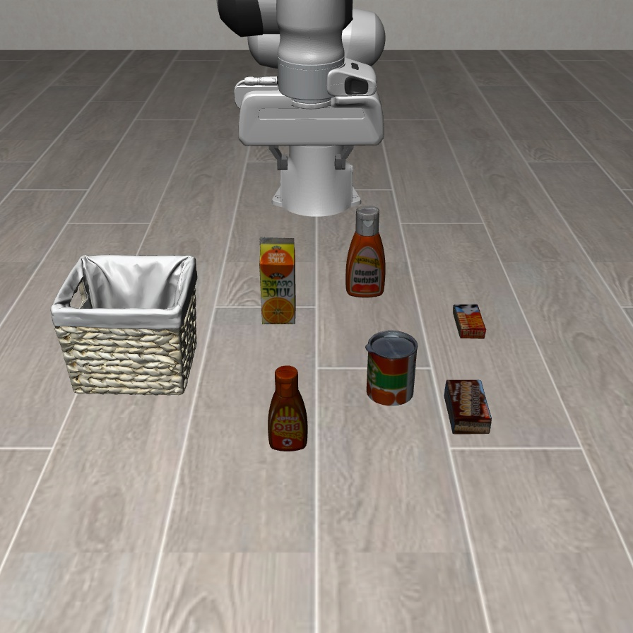
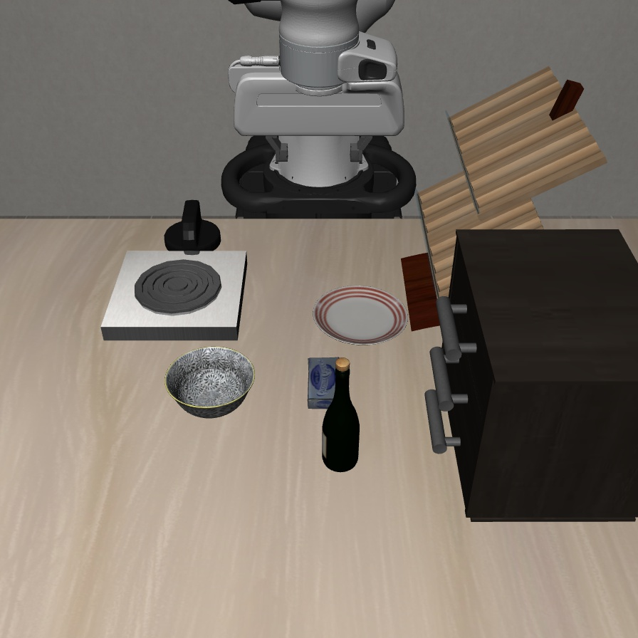
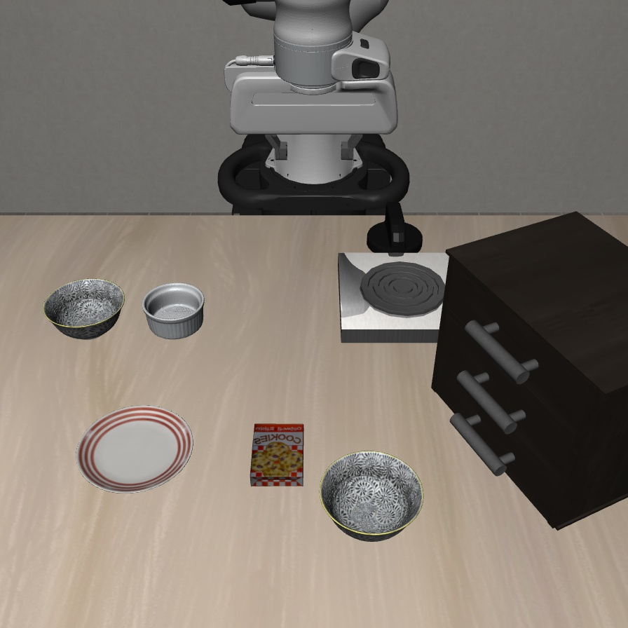
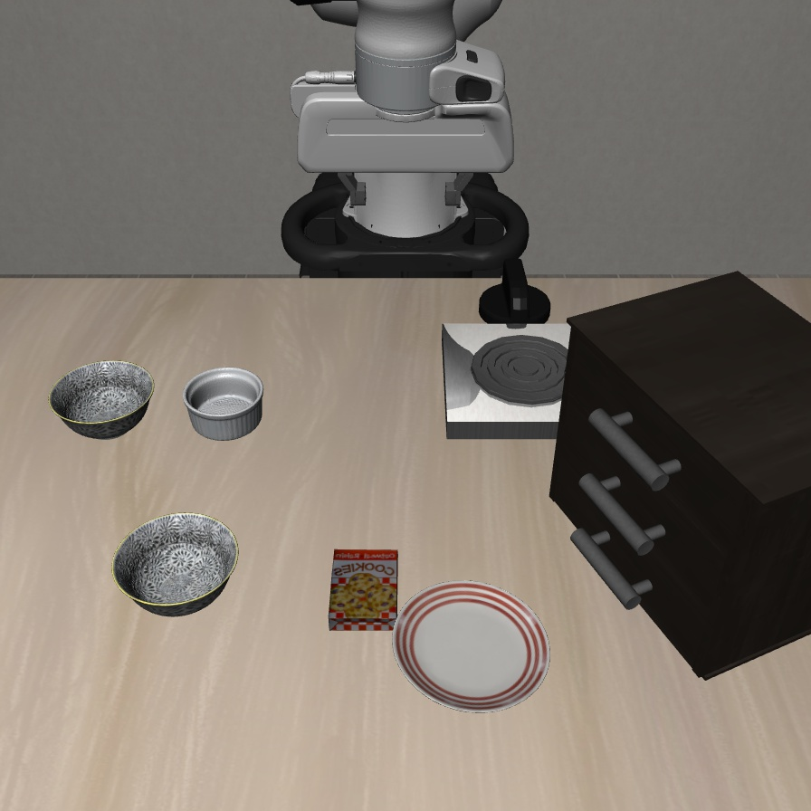
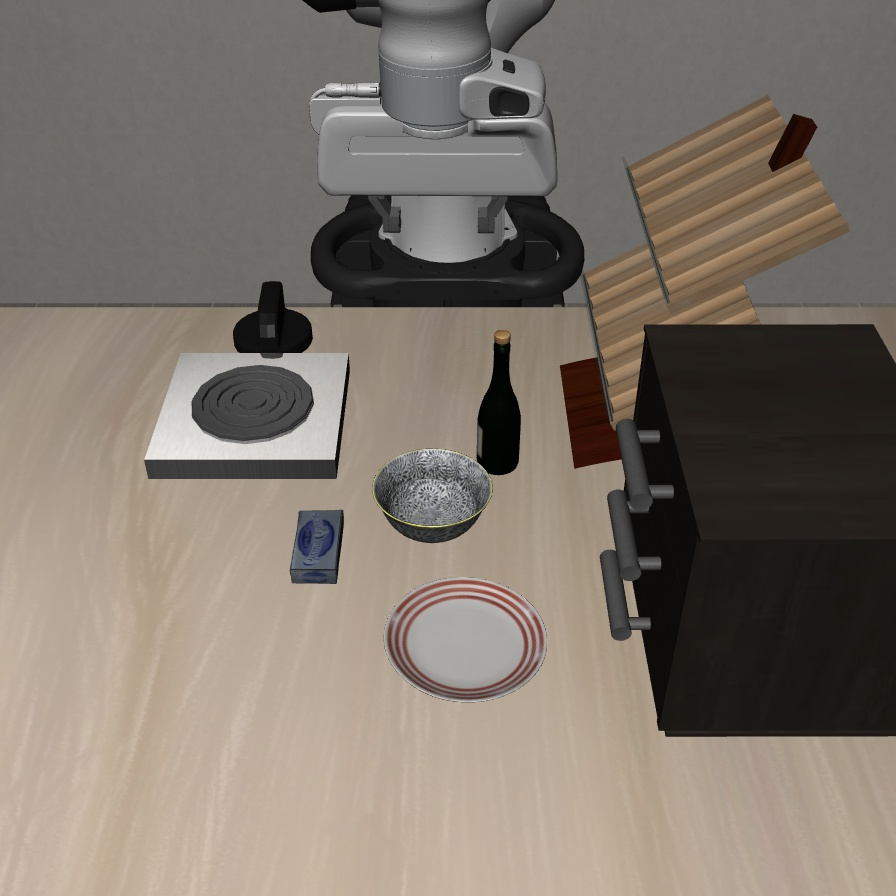
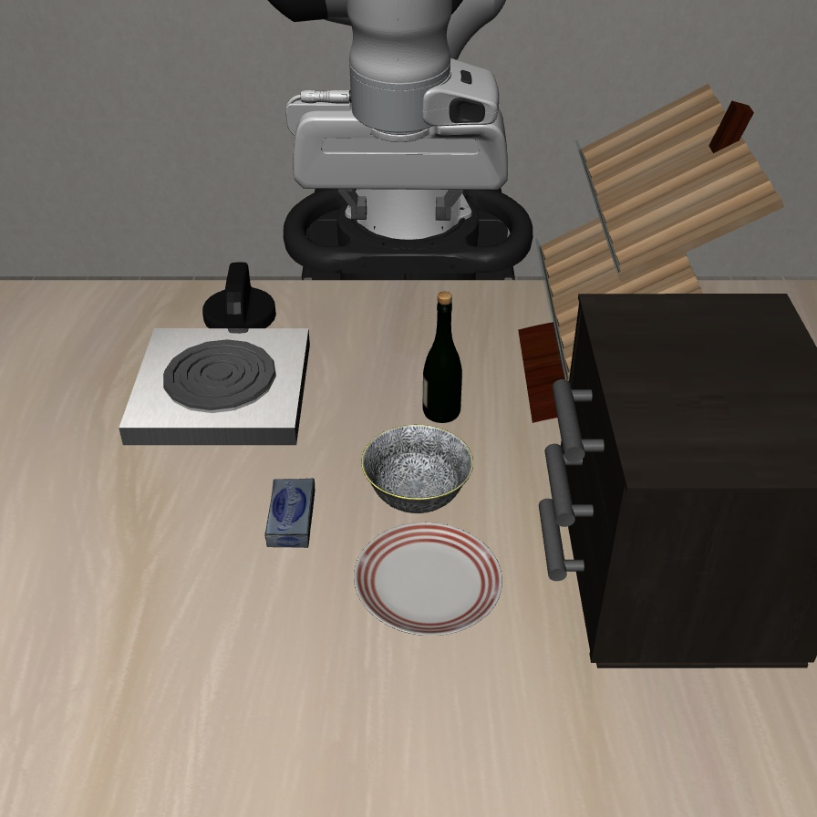
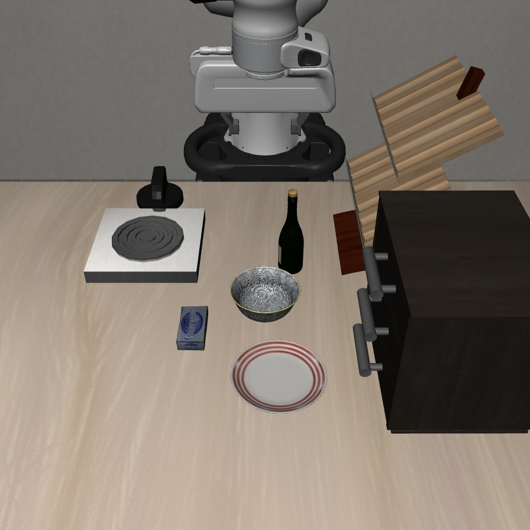

Improving Generalist Policies via Contrastive Flow at Test-Time
Abstract
Generalist robot policies often generate actions that follow the action distribution learned in the training scenes, even when the current observation differs. We make an interesting observation: such a policy already localizes the action-relevant visual regions in its text-to-vision attention, yet the generated actions remain under-conditioned on those regions. We propose ContrastFlow, a test-time method that turns the localized regions into a correction of the generated actions. ContrastFlow masks the attended visual tokens to obtain a negative reference from the policy itself, and amplifies the contrast between the velocity predictions with and without those tokens during flow integration, with no additional training and no auxiliary models. We show that the guidance shifts action plans toward the target and reduces the variance of the planned fingertip endpoints by about half. ContrastFlow consistently improves and Cosmos3, a vision-language-action model and a world action model, on LIBERO-PRO and RoboLab-120. On a physical robot, across four manipulation tasks that end in fine closed-loop alignment, ContrastFlow raises the per-task success rate of from 12–25% to 50–75%. ContrastFlow improves four state-of-the-art model families that span three architectures.
ContrastFlow in action
Real-world platform: UFACTORY xArm7.
Simulation benchmarks: LIBERO-PRO and RoboLab.
Real world
Centrifuge loading
Task prompt: Place the test tube into the target centrifuge slot.
P1 · Red
ContrastFlow
P5 · Red
ContrastFlow
OOD · P1 · Blue
ContrastFlow
P2 · Blue
ContrastFlow
P3 · Blue
ContrastFlow
Titration
Task prompt: Turn the burette valve to dispense liquid into the beaker.
Burette raised 2 cm
ContrastFlow
Default
ContrastFlow
Stand shifted toward base
ContrastFlow
Cable insertion
Task prompt: Insert the cable into the port.
Configuration 2
ContrastFlow
Configuration 1
ContrastFlow
Configuration 3
ContrastFlow
Adapter relocation
Task prompt: Move the charging adapter to the target socket.
Transfer 1 → 4
ContrastFlow
Transfer 2 → 4
ContrastFlow
Transfer 3 → 4
ContrastFlow
Simulation: LIBERO-PRO
Red: . Green: ContrastFlow. Trails show recorded motion across replans.
Object relocation
Task prompt: Pick the butter and place it in the basket.
Train setup

Test setup
ContrastFlow
Goal relocation
Task prompt: Put the bowl on the plate.
Train setup
Test setup

ContrastFlow
Placement recovery
Task prompt: Pick up the black bowl next to the ramekin and place it on the plate.
Train setup

Test setup

ContrastFlow
Scene rearrangement
Task prompt: Put the bowl on the stove.
Train setup

Test setup
ContrastFlow
Instruction change
Task prompt: Put the wine bottle on the plate.
Train setup

Test setup

ContrastFlow
Attention analysis
Attention shows each replan observation. Blue → red: low → high intensity.
Object relocation
Task prompt: Pick the butter and place it in the basket.
ContrastFlow
Goal relocation
Task prompt: Put the bowl on the plate.
ContrastFlow
Placement recovery
Task prompt: Pick up the black bowl next to the ramekin and place it on the plate.